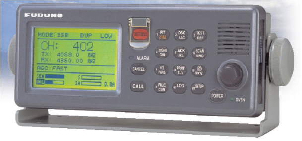

Radiotelefono MF-HF con DSC incorporado
El usuario utiliza este equipo para establecer las comunicaciones radiotelefónicas simuladas en la banda de MF/HF (de 1605 a 27500 Khz) y para la transmisión y recepción de llamadas DSC en dicha banda. El equipo incorpora un receptor de guardia en la frecuencia de socorro de 2182 Khz y mantiene un barrido continuo de las frecuencias DSC de socorro en MF/HF. Tiene programado todos los canales UIT permitiendo además la definición de canales de usuario. Usándolo conjuntamente con el terminal NBDP simulado permite las comunicaciones télex en MF/HF.
Dependiendo de la configuración elegida del simulador cada puesto va equipado con un radioteléfono de MF/HF Furuno FS-1570 real o bien con un equipo mimético simulado por software con su misma apariencia y funcionalidad.

